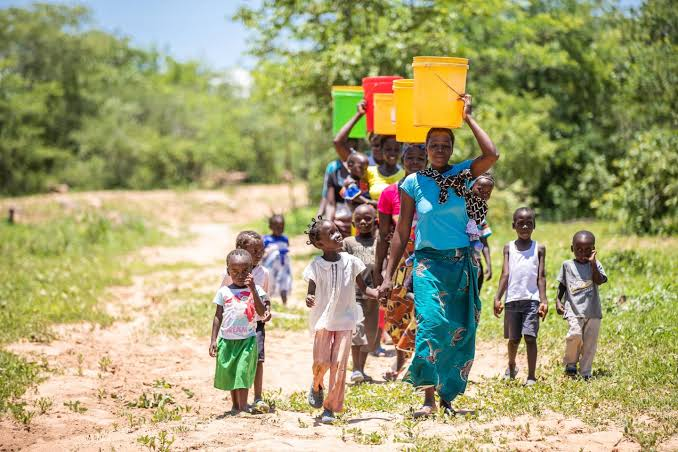
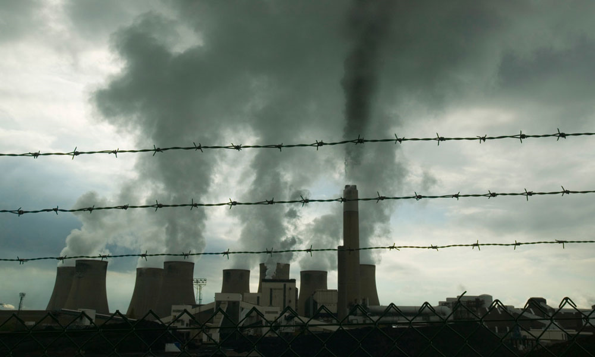
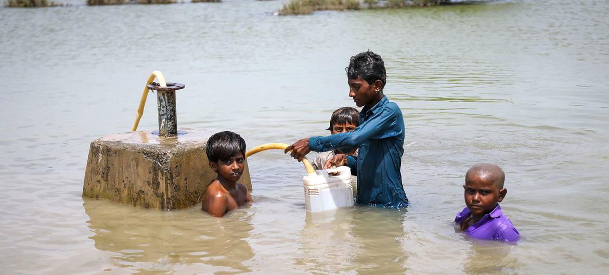

GLOBAL WARMING FACTS FOR AFRICAN CHILDREN
Welcome to the blog of Dolapo Arogun
REDUCE REUSE RECYCLE
Everything we produce, buy, or use affects the environment. This environmental impact could be positive or negative. Unfortunately, most of the products we use negatively impact the environment through their production and usage and could harm the environment even further through improper disposal. For example, some of the products we use are made from plastics (takes between 20 - 500 years to decompose depending on structure) which often ends up in the landfill where they are burnt releasing CO2 to the atmosphere or ends up in our oceans negatively impacting sea life. We need to think about the environmental impact of the products we use and buy less of those that have a high negative impact. One way to think about the things we use is to look at the 3 Rs of managing waste: REDUCE, REUSE, RECYLE.
.gif)
REDUCE: Cut back on the amount of waste you generate.
It’s the first of the 3 Rs because it’s the best method for
keeping the environment clean. By reducing, you stop the problem
at the source because making less waste to start with means
there’s less waste to dispose. Simple ways you can reduce the
amount of waste you make:
- Only buy things when you really need them e.g., If your trainers still fit, you do not need to buy a new pair.
- Use a lunchbox to pack your lunch instead of using paper or plastic bags which end up creating a huge amount of waste
- Say “No” to single-use plastics which end up in landfills and the ocean e.g., Use a reusable water bottle instead of buying bottled water.
.gif)
REUSE: Find new ways to use old things.
The second of the 3 Rs. Reusing is taking old or unwanted items you might otherwise throw
away and finding a new use for them. This saves time and money as well as energy and
materials. Easy ways to reuse items:
- Share your toys and if you no longer need them, donate them to an orphanage or local daycare.
- Find new use for old items e.g., Fill old food jars with leftovers; Use library books which are reused instead of buying a new book that will only be read once; Keep wrapping paper from old presents and use again; Use an old toothbrush as hairbrush.
- Have a garage sale to clean out your space and help reuse all the items you don’t want because there’s someone out there who would love to have them, and you can make a little money too.
RECYCLE: Change discarded materials into new products.
Recycling, the last of the 3 Rs is turning something old and useless into something new and
useful to avoid using more virgin resources. This is important for reducing the amount of
trash in landfills which if left unattended can become dangerous through the chemicals and
gases they release. Animals will sometimes eat this trash which causes problems in the
ecosystems.
Recycling also preserves natural resources used to make products, like trees used to make
paper – when we recycle and reuse paper, we no longer need to cut down trees. While
recycling is a way to extend the lifespan of a material, it still requires resources and
energy. Some examples of recycling:
- Cardboard is recycled into new cardboard, paper bags, and paperboard boxes for detergent, cereal etc.
- Plastics is turned into plastic lumber for buckets, storage tubs, plastic bottles etc.
- Newspaper is probably the most-recycled material. They gets turned into egg cartons, building insulation, paper plates, construction paper, and new newspaper.
- Aluminum cans can be reprocessed into new cans, bike frames and asphalt roadway.
A notable model of recycling is the women of the Ilaje community. Being recently sensitized to proper ways to dispose of waste, they are now cleaning up their communities while making money for themselves by selling plastics. Click here to read more.
You can replicate these practices in your homes to promote the conservation of natural resources and prevent water and land pollution. Recycling companies in Africa aim to reduce the trash in landfills, such as: Wecyclers, Bekia, Mr Green Africa, EcoPost.
Learn more about Reduce, Reuse, and Recycle Here

Dolapo Arogun
Hello Children. My name is Dolapo Arogun. And I will like to take you on a journey to a cleaner energy future for mankind. Have you heard people on TVs talking about climate change? Ever wondered what it is and why we care about it so much? Well, I am here to help you understand what it all means, what is being done to address it and what we can all do to make a difference.
Popular Posts
-

What is Global Warming?
Global warming is the term used to describe the rising of the average global temperature of the Earth that started in the pre-Industrial era due to the heating of the Earth’s surface. The Earth’s warming trend has been going on for a very long time, but the rate of warming has significantly increased in the last century mainly due to human activities. Human activities such as burning of fossil fuels to generate power and manufacture goods are causing worldwide temperatures to rise higher and faster than any time we know of in the past. -

Causes OF Global Warming
The main factor contributing to climate change is human activities. This is because of the large number of greenhouse gases we produce due to our lifestyle choices. Some greenhouse gases occur naturally in the atmosphere and play a part in making our planet habitable. However, the large number of greenhouse gases we produce is too much for the environment to handle. -

Effects of Global Warming
Warmer temperatures are gradually changing weather patterns and disrupting the normal balance of nature. Some of these changes such as heat waves, wildfires, prolonged drought, and extreme rainfall are happening faster than scientists previously predicted resulting in loss of lives, property damage and population displacement. Extreme weather and climate change pose many risks to human beings and all other forms of life on Earth.